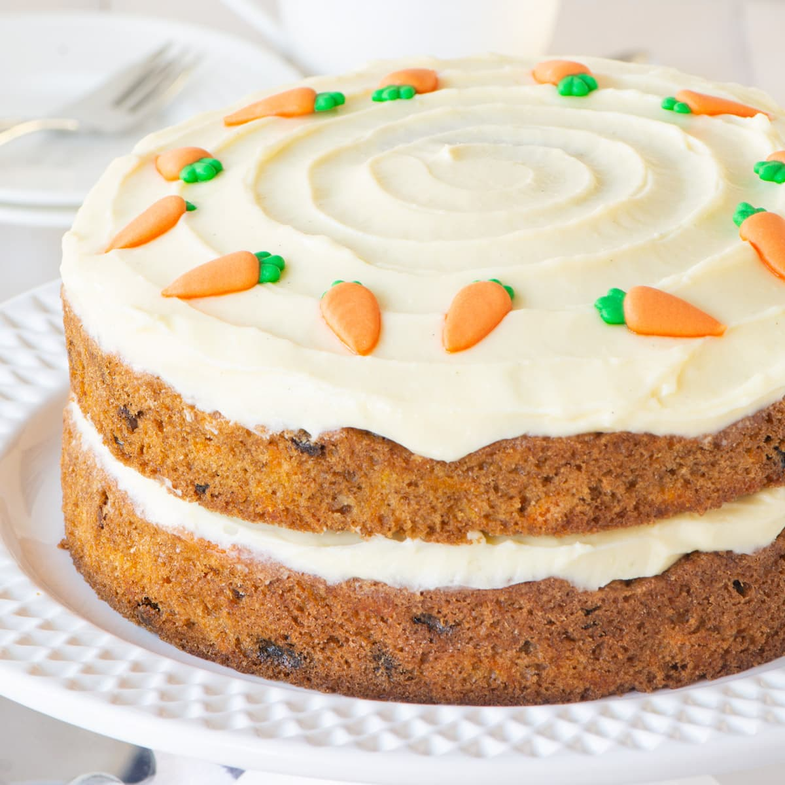

Carrot Cake

Description
While carrot cakes are synonymous with Easter celebrations and springtime, why should we have to limit ourselves to enjoying this scrumptious cake only when the Easter Bunny is in town?
Carrot cakes are made with ingredients you'd have on hand all year round, like carrots, spices, and of course cream cheese if you're making the iconic cream cheese frosting.
So, we're giving you our 15 best carrot cake recipes of all time that prove carrot cake can hold its own during any season.
Whether you're making a cake for a potluck, dinner party, birthday, or holiday get-together, these carrot cakes are sure to impress your guests with their delicious flavors — and they'll impress you with just how easy they are to make.
Scroll through to find your new favorite carrot cake.
Ingredients
- eggs
- 1¼ cups vegetable oil
- 2 cups white sugar
- 2 teaspoons vanilla extract
- 2 cups all-purpose flour
- 2 teaspoons baking soda
Steps
- Preheat oven to 350 degrees F (175 degrees C). Grease and flour a 9x13 inch pan.
- In a large bowl, beat together eggs, oil, white sugar and 2 teaspoons vanilla. Mix in flour, baking soda, baking powder, salt and cinnamon. Stir in carrots. Fold in pecans. Pour into prepared pan.
- Bake in the preheated oven for 40 to 50 minutes, or until a toothpick inserted into the center of the cake comes out clean. Let cool in pan for 10 minutes, then turn out onto a wire rack and cool completely.
- To Make Frosting: In a medium bowl, combine butter, cream cheese, confectioners' sugar and 1 teaspoon vanilla. Beat until the mixture is smooth and creamy. Stir in chopped pecans. Frost the cooled cake.